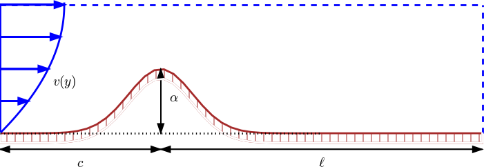

The convection-diffusion equation
Convection-diffusion without a force term
We now add a convection term \( \boldsymbol{v}\cdot\nabla u \) to the diffusion equation to obtain the well-known convection-diffusion equation: $$ \begin{equation} \frac{\partial u}{\partial t} + \v\cdot\nabla u = \dfc\nabla^2 u, \quad x,y, z\in \Omega,\ t\in (0, T]\tp \tag{3.69} \end{equation} $$ The velocity field \( \v \) is prescribed, and its characteristic size \( V \) is normally clear from the problem description. In the sketch below, we have some given flow over a bump, and \( u \) may be the concentration of some substance in the fluid. Here, \( V \) is typically \( \max_y v(y) \). The characteristic length \( L \) could be the entire domain, \( L=c+\ell \), or the height of the bump, \( L=D \). (The latter is the important length scale for the flow.)

Inserting $$ \bar x = \frac{x}{x_c},\ \bar y = \frac{y}{y_c},\ \bar z = \frac{z}{z_c}, \ \bar t = \frac{t}{t_c}, \ \bar\v = \frac{\v}{V}, \ \bar u =\frac{u}{u_c}$$ in (3.69) yields $$ \frac{u_c}{t_c} \frac{\partial \bar u}{\partial \bar t} + \frac{u_c V}{L}\bar\v\cdot\bar\nabla\bar u = \frac{\dfc u_c}{L^2}\bar\nabla^2\bar u, \quad \bar x,\bar y,\bar z\in \Omega,\ \bar t\in (0,\bar T]\tp $$ For \( u_c \) we simply introduce the symbol \( U \), which we may estimate from an initial condition. It is not critical here, since it vanishes from the scaled equation anyway, as long as there is no source term present. With some velocity measure \( V \) and length measure \( L \), it is tempting to just let \( t_c = L/V \). This is the characteristic time it takes to transport a signal by convection through the domain. The alternative is to use the diffusion length scale \( t_c=L^2/\dfc \). A common physical scenario in convection-diffusion problems is that the convection term \( \v\cdot\nabla u \) dominates over the diffusion term \( \dfc\nabla^2 u \). Therefore, the time scale for convection (\( L/V \)) is most appropriate of the two. Only when the diffusion term is very much larger than the convection term (corresponding to very small Peclet numbers, see below) \( t_c=L^2/\dfc \) is the right time scale.
The non-dimensional form of the PDE with \( t_c=L/V \) becomes $$ \begin{equation} \frac{\partial \bar u}{\partial \bar t} + \bar\v\cdot\bar\nabla\bar u = \hbox{Pe}^{-1}\bar\nabla^2\bar u, \quad \bar x,\bar y,\bar z\in \Omega,\ \bar t\in (0,\bar T], \tag{3.70} \end{equation} $$ where Pe is the Peclet number, $$ \hbox{Pe} = \frac{LV}{\dfc}\tp$$ Estimating the size of the convection term \( \v\cdot\nabla u \) as \( VU/L \) and the diffusion term \( \dfc\nabla^2 u \) as \( \dfc U/L^2 \), we see that the Peclet number measures the ratio of the convection and the diffusion terms: $$ \hbox{Pe} = \frac{\hbox{convection}}{\hbox{diffusion}} = \frac{VU/L}{\dfc U/L^2}= \frac{LV}{\dfc}\tp $$
In case we use the diffusion time scale \( t_c=L^2/\dfc \), we get the non-dimensional PDE $$ \begin{equation} \frac{\partial \bar u}{\partial \bar t} + \hbox{Pe}\,\bar\v\cdot\bar\nabla\bar u = \bar\nabla^2\bar u, \quad \bar x,\bar y,\bar z\in \Omega,\ \bar t\in (0,\bar T]\tp \tag{3.71} \end{equation} $$
For small Peclet numbers, \( \hbox{Pe}^{-1}\bar\nabla^2\bar u \) becomes very large and can only be balanced by two terms that are supposed to be unity of size. The time-derivative and/or the convection term must be much larger than unity, but that means we use suboptimal scales, since right scales imply that \( \partial\bar u/\partial\bar t \) and \( \bar v\cdot\bar\nabla\bar u \) are of order unity. Switching to a time scale based on diffusion as the dominating physical effect gives (3.71). For very small Peclet numbers this equation tells that the time-derivative balances the diffusion. The convection term \( \bar\v\cdot\bar\nabla\bar\u \) is around unity in size, but multiplied by a very small coefficient Pe, so this term is negligible in the PDE. An approximate PDE for small Peclet numbers is therefore $$ \frac{\partial \bar u}{\partial \bar t} = \bar\nabla^2\bar u\tp $$
Scaling can, with the above type of reasoning, be used to neglect terms from a differential equation under precise mathematical conditions.
Stationary PDE
Suppose the problem is stationary and that there is no need for any time scale. How is this type of convection-diffusion problem scaled? We get $$ \frac{VU}{L}\bar\v\cdot\bar\nabla\bar u = \frac{\dfc U}{L^2}\bar\nabla^2\bar u, $$ or $$ \begin{equation} \bar\v\cdot\bar\nabla\bar u = \hbox{Pe}^{-1}\bar\nabla^2\bar u\tp \tag{3.72} \end{equation} $$ This scaling only "works" for moderate Peclet numbers. For very small or very large Pe, either the convection term \( \bar\v\cdot\bar\nabla\bar u \) or the diffusion term \( \bar\nabla^2\bar u \) must deviate significantly from unity.
Consider the following 1D example to illustrate the point: \( \v = v\ii \), \( v>0 \) constant, a domain \( [0,L] \), with boundary conditions \( u(0)=0 \) and \( u(L)=U_L \). (The vector \( \ii \) is a unit vector in \( x \) direction.) The problem with dimensions is now $$ vu^{\prime} = \dfc u^{\prime\prime},\quad u(0)=0,\ u(L)=U_L\tp$$ Scaling results in $$ \frac{d\bar u}{d\bar x} = \hbox{Pe}^{-1}\frac{d^2\bar u}{d\bar x^2},\quad \bar x\in (0,1),\quad \bar u(0)=0,\ \bar u(1) = 1,$$ if we choose \( U=U_L \). The solution of the scaled problem is
\[ \bar u(\bar x) = \frac{1 - e^{\bar x{\small\hbox{Pe}}}}{1 - e^{\small\hbox{Pe}}}\tp\] Figure 17 indicates how \( \bar u \) depends on Pe: small Pe values give approximately a straight line while large Pe values lead to a boundary layer close to \( x=1 \), where the solution changes very rapidly.
Figure 17: Solution of scaled problem for 1D convection-diffusion.

We realize that for large Pe, $$ \max_{\bar x}\frac{d\bar u}{d\bar x} \approx \hbox{Pe},\quad \max_{\bar x}\frac{d^2\bar u}{d\bar x^2} \approx \hbox{Pe}^{2},$$ which are consistent results with the PDE, since the double derivative term is multiplied by \( \hbox{Pe}^{-1} \). For small Pe, $$ \max_{\bar x}\frac{d\bar u}{d\bar x}\approx 1,\quad \max_{\bar x}\frac{d^2\bar u}{d\bar x^2} \approx 0,$$ which is also consistent with the PDE, since an almost vanishing second-order derivative is multiplied by a very large coefficient \( \hbox{Pe}^{-1} \). However, we have a problem with very large derivatives of \( \bar u \) when Pe is large.
To arrive at a proper scaling for large Peclet numbers, we need to remove the Pe coefficient from the differential equation. There are only two scales at our disposals: \( u_c \) and \( x_c \) for \( u \) and \( x \), respectively. The natural value for \( u_c \) is the boundary value \( U_L \) at \( x=L \). The scaling of \( Vu_x = \dfc u_{xx} \) then results in $$ \frac{d\bar u}{d\bar x} = \frac{\dfc}{Vx_c}\frac{d^2\bar u}{d\bar x^2}, \quad \bar x\in (0,\bar L),\quad \bar u(0)=0,\ \bar u(\bar L)=1,$$ where \( \bar L = L/x_c \). Choosing the coefficient \( \dfc/(Vx_c) \) to be unity results in the scale \( x_c=\dfc/V \), and \( \bar L \) becomes Pe. The final, scaled boundary-value problem is now $$ \frac{d\bar u}{d\bar x} = \frac{d^2\bar u}{d\bar x^2}, \quad \bar x \in (0, \hbox{Pe}), \quad \bar u(0)=0,\ \bar u(\hbox{Pe})=1,$$ with solution $$ \bar u(\bar x) = \frac{1 - e^{\bar x}}{1 - e^{\small\mbox{Pe}}}\tp$$ Figure 18 displays \( \bar u \) for some Peclet numbers, and we see that the shape of the graphs are the same with this scaling. For large Peclet numbers we realize that \( \bar u \) and its derivatives are around unity (\( 1-e^{\hbox{Pe}}\approx -e^{\small\hbox{Pe}} \)), but for small Peclet numbers \( d\bar u/d\bar x \sim \hbox{Pe}^{-1} \).
Figure 18: Solution of scaled problem where the length scale depends on the Peclet number.

The conclusion is that for small Peclet numbers, \( x_c=L \) is an appropriate length scale. The scaled equation \( \hbox{Pe}\,\bar u' = \bar u'' \) indicates that \( \bar u''\approx 0 \), and the solution is close to a straight line. For large Pe values, \( x_c=\dfc/V \) is an appropriate length scale, and the scaled equation \( \bar u' = \bar u'' \) expresses that the terms \( \bar u' \) and \( \bar u'' \) are equal and of size around unity.
Convection-diffusion with a source term
Let us add a force term \( f(\x,t) \) to the convection-diffusion equation: $$ \begin{equation} \frac{\partial u}{\partial t} + \v\cdot\nabla u = \dfc\nabla^2 u + f\tp \tag{3.73} \end{equation} $$ The scaled version reads $$ \frac{\partial\bar u}{\partial\bar t} + \frac{t_cV}{L}\bar\v\cdot\bar\nabla \bar u = \frac{t_c\dfc}{L^2}\bar\nabla^2 \bar u + \frac{t_cf_c}{u_c}\bar f\tp $$ We can base \( t_c \) on convective transport: \( t_c = L/V \). Now, \( u_c \) could be chosen to make the coefficient in the source term unity: \( u_c = t_cf_c = Lf_c/V \). This leaves us with $$ \frac{\partial\bar u}{\partial\bar t} + \bar\v\cdot\bar \nabla\bar u = \hbox{Pe}^{-1}\bar \nabla^2 \bar u + \bar f\tp $$
In the diffusion limit, we base \( t_c \) on the diffusion time scale: \( t_c=L^2/\dfc \), and the coefficient of the source term set to unity determines \( u_c \) according to $$ \frac{L^2 f_c}{\dfc u_c} = 1\quad\Rightarrow\quad u_c = \frac{L^2 f_c}{\dfc}\tp$$ The corresponding PDE reads $$ \frac{\partial\bar u}{\partial\bar t} + \hbox{Pe}\,\bar\v\cdot\bar \nabla\bar u = \bar\nabla^2 \bar u + \bar f, $$ so for small Peclet numbers, which we have, the convective term can be neglected and we get a pure diffusion equation with a source term.
What if the problem is stationary? Then there is no time scale and we get $$ \frac{V u_c}{L}\bar\v\cdot\bar \nabla \bar u = \frac{u_c \dfc}{L^2}\bar\nabla^2 \bar u + f_c\bar f, $$ or $$ \bar\v\cdot\bar \nabla \bar u = \hbox{Pe}^{-1}\bar\nabla^2 \bar u + \frac{f_c L}{V u_c}\bar f\tp $$ Again, choosing \( u_c \) such that the source term coefficient is unity leads to \( u_c= f_c L/V \). Alternatively, \( u_c \) can be based on the initial condition, with similar results as found in the sections on the wave and diffusion PDEs.
Exercises
Problem 4.1: Stationary Couette flow
A fluid flows between two flat plates, with one plate at rest while the other moves with velocity \( U_0 \). This classical flow case is known as stationary Couette flow.
a) Directing the \( x \) axis in the flow direction and letting \( y \) be a coordinate perpendicular to the walls, one can assume that the velocity field simplifies to \( \u = u(y)\ii \). Show from the Navier-Stokes equations that the boundary-value problem for \( u(y) \) is $$ u^{\prime\prime}(u) = 0,\quad u(0)=0,\ u(H)=U_0\tp$$ We have here assumed at \( y=0 \) corresponds to the plate at rest and that \( y=H \) represents the plate that moves. There are no pressure gradients present in the flow.
b) Scale the problem in a) and show that the result has no physical parameters left in the model: $$ \frac{d^2\bar u}{d\bar y^2} = 0,\quad \bar u(0)=0,\ \bar u(1)=1\tp$$
c) We can compute \( \bar u(\bar y) \) from one numerical simulation (or a straightforward integration of the differential equation). Set up the formula that finds \( u(y; H, u_0) \) from \( \bar u(\bar y) \) for any values of \( H \) and \( U_0 \).
Filename: stationary_Couette.
Remarks
The problem for \( u \) is a classical two-point boundary-value problem in applied mathematics and arises in a number of applications, where Couette flow is just one example. Heat conduction is another example: \( u \) is temperature, and the heat conduction equation for an insulated rod reduces to \( u^{\prime\prime}=0 \) under stationary conditions and no heat source. Controlling the end \( x=0 \) at 0 degrees Celsius the other end \( x=L \) at \( U_0 \) degrees Celsius, gives the same boundary conditions as in the above flow problem. The scaled problem is of course the same whether we have flow of fluid or heat.
Exercise 4.2: Couette-Poiseuille flow
Viscous fluid flow between two infinite flat plates \( z=0 \) and \( z=H \) is governed by $$ \begin{align} \mu u''(z) &= -\beta \tag{3.74}\\ u(0) &= 0, \tag{3.75}\\ u(H) &= U_0\tp \tag{3.76} \end{align} $$ Here, \( u(z) \) is the fluid velocity in \( x \) direction (perpendicular to the \( z \) axis), \( \mu \) is the dynamic viscosity of the fluid, \( \beta \) is a positive constant pressure gradient, and \( U_0 \) is the constant velocity of the upper plate \( z=H \) in \( x \) direction. The model represents Couette flow for \( \beta=0 \) and Poiseuille flow for \( U_0=0 \).
a) Find the exact solution \( u(z) \). Point out how \( \beta \) and \( U_0 \) influence the magnitude of \( u \).
SymPy can integrate the differential equation twice and fit the integration constants to the boundary conditions:
import sympy as sym
mu, beta, z, H = sym.symbols('mu beta z H',
real=True, positive=True)
U0, C1, C2 = sym.symbols('U0 C1 C2', real=True)
# Integrate u''(z) = -beta/mu twice and add integration constants
u = sym.integrate(sym.integrate(-beta/mu, z) + C1, z) + C2
# Use the boundary conditions
eq = [sym.Eq(u.subs(z, 0), 0),
sym.Eq(u.subs(z, H), U0)]
s = sym.solve(eq, [C1, C2])
print s
u = u.subs(C1, s[C1]).subs(C2, s[C2])
u = sym.simplify(sym.expand(u))
The result becomes $$ u(z) = \frac{z}{2 H \mu} \left(H \beta \left(H - z\right) + 2 U_{0} \mu\right)\tp $$
The maximum value of \( u \) is found by
# Find max u
dudz = sym.diff(u, z)
s = sym.solve(dudz, z)
print s
umax = u.subs(z, s[0])
umax = sym.simplify(sym.expand(umax))
and reads $$ \max_z u = \frac{H^{2} \beta}{8 \mu} + \frac{U_{0}}{2} + \frac{U_{0}^{2} \mu}{2 H^{2} \beta}\tp $$ If the pressure gradient is the dominating driving force, we can neglect the \( U_0 \) terms: \( \max_z u = H^2\beta/(8\mu) \). In case the movement of the upper plate is much more important than the pressure gradient for driving the flow, we can neglect the \( \beta \) terms. However, we must then resort to the \( u(z) \) expression for \( \beta=0 \), \( u(z)=zU_0/H \), and realize that the maximum then is obtained at the boundary for \( z=H \): \( \max_z h=U_0 \) (as intuitively obvious).
b) Scale the problem.
Introducing $$ \bar z = \frac{z}{z_c}, \quad \bar u (\bar z) = \frac{u(z_c\bar z)}{u_c},$$ in the equation gives $$ \frac{d^2\bar u}{d\bar z^2} = -\frac{z_c^2\beta}{\mu u_c}\tp$$ The natural scale for \( z_c \) is \( H \) since that makes \( \bar z\in [0,1] \). For the two terms in the differential equation to be of order unity (with a correct scaling, the left-hand side should be of order unity), we must have $$ u_c = \frac{H^2\beta}{\mu}\tp$$ The boundary value problem is $$ \begin{align*} \frac{d^2\bar u}{d\bar z^2} &= -1,\quad &\bar z\in (0,1),\\ \bar u(0) &= 0,\\ \bar u(1) &= \alpha, \end{align*} $$ where \( \alpha \) is a dimensionless number $$ \alpha = \frac{\mu U_0}{H^2\beta}\tp$$ This is meaningful only for \( \beta\neq 0 \).
Looking at the exact solution, we see that \( \max_z u = H^2\beta/(8\mu) \), and with this \( \max_z u \) as \( u_c \) we get a differential equation \( \bar u'' = -8 \) instead, and \( \bar u\in [0,1] \) (if \( U_0=0 \)). However, the factor \( 1 \) or \( 8 \) on the right-hand side is not significant, neither if \( \bar u\in [0,1] \) or \( \bar u\in [0,8] \).
The scale \( u_c \) used above is relevant if the pressure gradient is the dominating force. If \( U_0 \) is more important than \( \beta \), or \( \beta =0 \), we choose \( u_c=U_0 \) and get instead $$ \begin{align} \frac{d^2\bar u}{d\bar z^2} &= -\alpha^{-1},\quad &\bar z\in (0,1), \tag{3.77}\\ \bar u(0) &= 0, \tag{3.78}\\ \bar u(1) &= 1\tp \tag{3.79} \end{align} $$
Filename: Couette_wpressure.
Exercise 4.3: Pulsatile pipeflow
The flow of a viscous fluid in a straight pipe with circular cross section with radius \( R \) is governed by $$ \begin{align} \varrho\frac{\partial u}{\partial t} &= \frac{\mu}{r}\frac{\partial}{\partial r} \left(r\frac{\partial u}{\partial r}\right) - P(t), & r\in (0,R),\ t\in (0,T], \tag{3.80}\\ \frac{\partial u}{\partial r}(0,t) &= 0, & t\in (0,T], \tag{3.81}\\ u(R,t) &= 0, & t\in (0,T], \tag{3.82}\\ u(r,0) &= 0, & r\in [0,R]. \tag{3.83} \end{align} $$ The quantity \( u(r,t) \) is the fluid velocity, \( P(t) \) is a given pressure gradient, \( \varrho \) is the fluid density, and \( \mu \) is the dynamic viscosity.
Assume \( P(t) = A\cos\omega t \). Scale the problem and identify appropriate dimensionless numbers. Thereafter, assume \( P(t) \) is a more complicated function, but still period with period \( p \). Discuss how the scaling can be extended to this case.
We introduce dimensionless quantities: $$ \bar r = \frac{r}{R},\quad \bar t = \frac{t}{t_c},\quad \bar u = \frac{u}{u_c}\tp$$ The function \( P(t) \) can be scaled as $$ \bar P(\bar t) = \frac{P(t_c\bar t)}{A} = \sin (t_c\omega \bar t)\tp$$ Inserted in the PDE, we get $$ \frac{\partial\bar u}{\partial\bar t} = \frac{t_c \nu }{R^2}\frac{1}{\bar r}\frac{\partial}{\partial\bar r} \left(\bar r\frac{\partial\bar u}{\partial\bar r}\right) - \frac{t_c A}{\varrho u_c}\sin (t_c\omega\bar t),$$ where \( \mu = \mu/\varrho \).
The scale for \( u \) can be explored by seeking an analytical solution of the problem. Such solutions do exist, they are typically series expansions of Bessel functions, and it is not so easy to extract a simple expression for the maximum value of \( |u(r,t)| \). A simpler approach is to estimate \( u_c \) by demanding the coefficient in the pressure term to be of unit size: $$ u_c = \frac{t_cA}{\varrho}\tp$$ There are two choices of time scales: the pressure time scale \( t_c=1/\omega \) and the viscosity (or diffusion) time scale \( t_c=R^2/nu \). With the latter, we get \( u_c = R^2 A/\mu \) and $$ \frac{\partial\bar u}{\partial\bar t} = \frac{1}{\bar r}\frac{\partial}{\partial\bar r} \left(\bar r\frac{\partial\bar u}{\partial\bar r}\right) - \sin (\alpha\bar t),$$ where $$ \alpha = \frac{R^2\omega}{\nu} = \frac{R^2/\nu}{1/\omega},$$ showing that \( \alpha \) is the ratio of the viscosity time scale and the pressure oscillation time scale.
With the pressure time scale we have $$ u_c = \frac{\varrho A}{\omega},$$ and the scaled PDE becomes $$ \frac{\partial\bar u}{\partial\bar t} = \alpha^{-1}\frac{1}{\bar r}\frac{\partial}{\partial\bar r} \left(\bar r\frac{\partial\bar u}{\partial\bar r}\right) - \sin (\bar t)\tp$$ In both cases the scaled boundary conditions become $$ \frac{\partial\bar u}{\partial\bar t} = 0,\quad \bar u(1,\bar t) = 0,$$ for \( t\in (0,T/t_c] \), and \( \bar u(\bar r, 0)=0 \) for \( \bar r\in [0,1] \).
If \( P(t) \) is not sinusoidal but periodic with period \( p \), we have that \( P \) is a function of \( \omega t \) as above, with \( \omega = 2\pi/p \). Everything in the scaling remains the same, just the \( \sin \) term changes to \( P(\alpha\bar t) \) if the time scale is based on viscosity (diffusion), and \( P(\bar t) \) if the time scale is based on the pressure oscillations.
Filename: pipeflow.
Exercise 4.4: The linear cable equation
A key PDE in neuroscience is the cable equation, here given in its simplest linear form: $$ \begin{equation} \tau\frac{\partial u}{\partial t} = \lambda^2\frac{\partial^2 u}{\partial x^2} -u\tp \tag{3.84} \end{equation} $$ The unknown \( u \) is the voltage (measured in volt) associated with an electric current along one-dimensional dendrites ("cables") in neural networks, while \( \tau \) and \( \lambda \) are given parameters.
Scale (3.84) in three ways: 1) let all terms in the scaled equation have unit coefficients, 2) use the domain size \( L \) as spatial scale and base the time scale on diffusion, 3) use the domain size \( L \) as spatial scale and base the time scale on reaction, i.e., the \( -u \) term.
Straightforward scaling, with scales \( u_c \), \( t_c \), and \( x_c \), leads in the first step to $$ \frac{\partial\bar u}{\partial\bar t} = \frac{t_c\lambda^2}{\tau x_c^2}\frac{\partial^2\bar u}{\partial\bar x^2} - \frac{t_c}{\tau}\bar u\tp$$ Assuming that all terms are equally important and of unit size in the scaled PDE, we get a uniquely determined length and space scale: $$ t_c = \tau,\quad x_c = \lambda\tp$$ The scaled cable equation is then $$ \frac{\partial\bar u}{\partial\bar t} = \frac{\partial^2\bar u}{\partial\bar x^2} - \bar u\tp $$
Let now the spatial scale be fixed as \( x_c=L \). Basing \( t_c \) on diffusion means \( t_c = \tau (L/\lambda)^2 \), and the scaled PDE becomes $$ \frac{\partial\bar u}{\partial\bar t} = \frac{\partial^2\bar u}{\partial\bar x^2} - \beta\bar u,$$ where $$ \beta = \left(\frac{L}{\lambda}\right)^2\tp$$
Basing \( t_c \) on the reaction scale, i.e., the balance of the time derivative and the reaction term, gives \( t_c=\tau \) and the scaled PDE $$ \frac{\partial\bar u}{\partial\bar t} = \beta^{-1}\frac{\partial^2\bar u}{\partial\bar x^2} - \bar u\tp$$
In neuroscience applications of the cable equation to dendrites, it appears that \( \lambda \) is about 1 mm and of the same order of magnitude as the cable length, so \( \beta \) is around 1 in size. Then there are not big differences in these scalings, and the first one is to be preferred. The two others are more suitable when \( \beta \) is small or large, e.g., such that the term with \( \beta \) can be left out of the PDE.
Filename: cable_eq.
Exercise 4.5: Heat conduction with discontinuous initial condition
Two pieces of metal at different temperature are brought in contact at \( t=0 \). The following initial-boundary value problem governs the temperature evolution in the two pieces: $$ \begin{align} \frac{\partial u}{\partial t} &= \dfc\nabla^2 u,\ & \x\in\Omega,\ t\in (0,T], \tag{3.85}\\ u(\x,0)&=I(x), & \x\in \Omega, \tag{3.86}\\ -\dfc\frac{\partial u}{\partial n} &= h(u-u_S), & x\in\partial\Omega,\ t\in (0,T]. \tag{3.87} \end{align} $$ Here, \( u(\x,t) \) is the temperature, \( \dfc \) the effective heat diffusion coefficient (assuming both pieces are homogeneous and of the same type of metal), and \( u_S \) is the surrounding temperature. The domain \( \Omega \) consists of the two pieces \( \Omega_1 \) and \( \Omega_2 \): \( \Omega = \Omega_1\cup\Omega_2 \). The initial condition can be specified as $$ I(x) = \left\lbrace\begin{array}{ll} U_1, & \x\in\Omega_1,\\ U_2, & \x\in\Omega_2, \end{array}\right. $$ where \( U_1 \) and \( U_2 \) are the constant initial temperatures in each piece.
Thinking of two identical pieces \( \Omega_1 \) and \( \Omega_2 \) with shapes as bricks, it is tempting to develop a one-dimensional model, especially if the pieces are somewhat slender. We then expect the main temperature variations to take place in the \( x \) direction, where the \( x \) axis is perpendicular to the contact surface between the pieces. The idea is to integrate the governing PDE in the two other directions, use the Gauss divergence theorem on \( \dfc\nabla^2u \), and apply the cooling boundary condition. Let \( A \) be the cross section of the bricks. Integrating over \( A \) gives $$ \begin{align*} \int\limits_A \frac{\partial u}{\partial t}dydz &= \int\limits_A \dfc\left( \frac{\partial^2 u}{\partial x^2} + \frac{\partial^2 u}{\partial y^2} + \frac{\partial^2 u}{\partial z^2} \right)dydz \\ &=\int\limits_A \dfc \frac{\partial^2 u}{\partial x^2} dydz + \int\limits_A \dfc\left( \frac{\partial^2 u}{\partial y^2} + \frac{\partial^2 u}{\partial z^2} \right)dydz \\ & = \int\limits_A \dfc \frac{\partial^2 u}{\partial x^2} dydz + \dfc\int\limits_{\partial A}\frac{\partial u}{\partial n}ds\\ & = \int\limits_A \dfc \frac{\partial^2 u}{\partial x^2} dydz -h(v(x,t) -u_S)\tp \end{align*} $$ The function \( v(x,t) \) means \( u(\x,t) \) evaluated at the boundary \( \partial A \). Assuming \( u \) to vary little across the cross section \( A \), we can approximate the integrals by \( u \) evaluated at \( \partial A \) as \( v \): $$ \int\limits_A \frac{\partial u}{\partial t}dydz\approx A \frac{\partial}{\partial t} v(x,t), \quad \int\limits_A \dfc \frac{\partial^2 u}{\partial x^2} dydz \approx A \dfc \frac{\partial^2 v}{\partial x^2}, $$ where \( A \) now is the cross-section area. The result is the 1D initial-boundary value problem $$ \begin{align} \frac{\partial v}{\partial t} &= \dfc \frac{\partial^2 v}{\partial x^2} -\frac{h}{A}(v(x,t) -u_S),\ & x\in (0,L),\ t\in (0,T], \tag{3.88}\\ v(x,0)&=I(x), & x\in (0,L), \tag{3.89}\\ \dfc\frac{\partial v}{\partial x} &= h(v(x,t)-u_S), & x=0,\ t\in (0,T], \tag{3.90}\\ -\dfc\frac{\partial v}{\partial x} &= h(v(x,t)-u_S), & x=L,\ t\in (0,T], \tag{3.91} \end{align} $$ with $$ I(x) = \left\lbrace\begin{array}{ll} U_1, & x\in [0,L/2),\\ U_2, & x\in [L/2, L]\tp \end{array}\right. $$ Scale this problem.
We expect the temperature to start from the discontinuous state with \( U_1 \) and \( U_2 \) and approach the surrounding temperature \( u_S \) in the cooling law as \( t\rightarrow\infty \). A suitable scaling is then $$ \bar v = \frac{v - \min (U_1,U_2)}{u_S-\min (U_1, U_2)},$$ since this implies that \( u \) varies from 0 to 1. Without loss of generality we assume \( U_1 < U_2 \), so $$ \bar v = \frac{v - U_1}{u_S-U_1}\tp$$ Furthermore, $$ \bar x = \frac{x}{L},\quad \bar t = \frac{t}{t_c}\tp$$ Inserted in the governing PDE, we have $$ \frac{\partial\bar v}{\partial\bar t} = \frac{t_c\dfc}{L^2}\frac{\partial^2\bar v}{\partial\bar x^2} -\frac{t_c h}{A(u_S-U_1)} (U_1 + (u_S-U_1) \bar v(x,t) - u_S),$$ which simplifies to $$ \frac{\partial\bar v}{\partial\bar t} = \frac{t_c\dfc}{L^2}\frac{\partial^2\bar v}{\partial\bar x^2} -\frac{t_c h}{A} (\bar v(x,t) - 1)\tp$$ The natural time scale is that of diffusion: \( t_c = L^2/dfc \). This choice results in the scaled PDE $$ \frac{\partial\bar v}{\partial\bar t} = \frac{\partial^2\bar v}{\partial\bar x^2} -\beta (\bar v(x,t) - 1),$$ with the dimensionless number $$ \beta = \frac{L^2 h}{A\dfc}\tp$$
The scaled initial condition becomes $$ \bar v(\bar x,0)=0 \hbox{ if } 0\leq x < 1/2\hbox{ else } \gamma,$$ where \( \gamma \) is the dimensionless number $$ \gamma = \frac{U_2 - U_1}{U_s - U_1}\tp$$ The scaled boundary conditions take the form $$ \frac{\partial}{\partial\bar x}\bar v(0,t) = \hbox{Nu} (\bar v(0,t)-1),\quad -\frac{\partial}{\partial\bar x}\bar v(L,t) = \hbox{Nu} (\bar v(L,t)-1), $$ where Nu is the Nusselt number $$ \hbox{Nu} = \frac{Lh}{\dfc}\tp$$
Here is a simulation with \( \beta=0.1 \) and \( \hbox{Nu}=2 \)
(using the diffusion_two_metal_pieces function in
session.py).
Filename: metal_pieces.